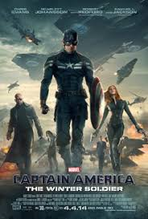

"I'm just a kid from Brooklyn."
―Steve Rogers[src]
Captain Steven Grant "Steve" Rogers is the only living, successful test subject of the Super Soldier Serum developed
by Abraham Erskine during World War II, after which the patriotic super soldier became known as Captain America.
He fought against the Nazis and their rogue science division HYDRA until he went MIA during the war.
After nearly seventy years of being frozen, Steve awoke in the 21st century and became the leader of the Avengers.
Following the Battle of New York, Steve became an agent of S.H.I.E.L.D. and went on several covert missions with agent
Natasha Romanoff and S.H.I.E.L.D. counter-terrorism team, Strike. Both Steve and Natasha discovered that HYDRA had secretly operated
within S.H.I.E.L.D. for decades and using Steve's best friend Bucky Barnes as an operative known as the Winter Soldier.
Steve, with the help of Sam Wilson, was able to destroy HYDRA's Helicarriers for Project Insight.
When the Avengers reassembled to find Loki's Scepter, Steve acted as co-leader of the team with Tony Stark.
Soon after, the global peacekeeping program created by Tony and Bruce Banner
called Ultron went rogue and attempted to wipe out humanity. Steve and the Avengers were able to destroy Ultron.
Steve lead the new Avengers on a mission in Lagos to stop Brock Rumlow from getting a biological weapon. However the mission went wrong and civilians were killed.
Thaddeus Ross, now serving as U.S. Secretary of State, went to the New Avengers Facility to present the Avengers with the Sokovia Accords,
designed regulate the actions of enhanced individuals. The Accords divided the Avengers, leaving Steve and Tony on opposite sides. Soon after,
Steve and Sam found Bucky, who was framed for the bombing at the UN by Helmut Zemo.
Steve and Tony's teams battled each other at the Leipzig/Halle Airport, Steve and Bucky arrived at a HYDRA facility in Siberia searching for Zemo,
Tony also arrived and declared a ceasefire to find Zemo. Zemo revealed himself and explained that he wanted revenge on the Avengers for
the death of his family during the Battle of Sokovia and revealed Bucky killing Tony's parents. Enraged, Tony attempt to kill Bucky forcing Steve to fight him,
after an intense fight Steve took Bucky away and dropped his shield, leaving it behind for Tony, Steve went
into hiding for two years, but came out when Thanos and the Black Order came to earth for the Infinity Stones. Steve and the Avengers failed
to stop Thanos of ending half of all life in the universe.
Steve and the remaining Avengers embarked on a mission to reverse the effects of the Decimation. They embarked on a number of time heists to retrieve past versions of the Infinity Stones
and reverse what Thanos had done. Following the final defeat of Thanos, Steve chose to return to the past to be with Peggy Carter,
the love of his life. In 2023, an elderly Steve returned to pass on his shield and duties as Captain America to Sam Wilson.